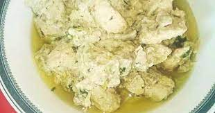

Bread omlette
Ingredients: 2-3 eggs Salt, to taste Black pepper, to taste Butter or oil, for cooking Fillings (optional): Grated cheese Chopped vegetables (e.g., bell peppers, onions, tomatoes, spinach) Cooked meats (e.g., ham, bacon, sausage) Herbs (e.g., parsley, chives) Instructions: Prepare Fillings (if using): If you're adding fillings like vegetables or meats, chop them into small pieces and cook them beforehand if necessary. Set aside. Beat Eggs: Crack the eggs into a bowl. Season with salt and black pepper. Beat the eggs with a fork or whisk until well combined and slightly frothy. Heat Pan: Place a non-stick skillet or frying pan over medium heat. Add a small amount of butter or oil and let it heat up. Cook Eggs: Once the pan is hot, pour the beaten eggs into the skillet. Allow the eggs to cook for a minute or two until the edges start to set. Add Fillings (if using): Sprinkle your desired fillings over one half of the omelette. Fold Omelette: Using a spatula, carefully fold the other half of the omelette over the side with the fillings. Press down gently to seal. Cook Until Set: Let the omelette cook for another minute or two until it's fully set and cooked through. You can gently press down on the top with the spatula to ensure even cooking. Serve: Slide the omelette onto a plate and serve hot. You can garnish with additional herbs or grated cheese if desired.
Karahi
Ingredients: 500g bone-in chicken pieces (with or without skin) 2 tablespoons oil or ghee 1 large onion, finely chopped 2 tomatoes, chopped 2-3 green chilies, slit lengthwise (adjust to taste) 1 tablespoon ginger garlic paste 1 teaspoon cumin seeds 1 teaspoon red chili powder (adjust to taste) 1 teaspoon coriander powder 1/2 teaspoon turmeric powder Salt to taste Fresh coriander leaves for garnish Instructions: Heat Oil: Heat oil or ghee in a karahi (wok) or a deep frying pan over medium heat. Sauté Onion: Add chopped onions to the hot oil and sauté until they turn translucent and golden brown. Add Spices: Add cumin seeds to the onions and sauté for a few seconds until they release their aroma. Then add ginger garlic paste and sauté until the raw smell disappears. Add Chicken: Add the chicken pieces to the pan and stir well to coat them with the onion and spice mixture. Cook Chicken: Cook the chicken pieces for about 5-7 minutes until they start to brown slightly. Add Tomatoes and Spices: Add chopped tomatoes, green chilies, red chili powder, coriander powder, turmeric powder, and salt to the pan. Mix everything well and cook for another 5-7 minutes until the tomatoes are soft and the oil starts to separate. Simmer: Lower the heat, cover the pan, and let the chicken simmer for about 15-20 minutes until it is cooked through and tender. Stir occasionally to prevent sticking. Garnish and Serve: Once the chicken is cooked, garnish with fresh coriander leaves and serve hot with naan bread or rice.
Biryani
Ingredients: For Marination: 500g chicken, cut into pieces 1 cup yogurt 2 tablespoons ginger garlic paste 1 teaspoon red chili powder 1 teaspoon turmeric powder 1 teaspoon garam masala powder Salt to taste For Rice: 2 cups basmati rice, soaked for 30 minutes Water for boiling rice Salt to taste Whole spices (2-3 cloves, 2-3 green cardamom pods, 1-inch cinnamon stick) 1 bay leaf For Biryani Masala: 2 onions, thinly sliced 2 tomatoes, chopped 2 green chilies, slit lengthwise 1/4 cup chopped fresh coriander leaves 1/4 cup chopped fresh mint leaves 1/2 cup fried onions (optional) 1/4 cup oil or ghee Few saffron strands soaked in 2 tablespoons warm milk (optional) Instructions: Marinate the Chicken: In a bowl, mix yogurt, ginger garlic paste, red chili powder, turmeric powder, garam masala powder, and salt. Add chicken pieces to the marinade, coat them well, cover, and refrigerate for at least 1 hour, preferably longer for better flavor. Prepare the Rice: In a large pot, bring water to a boil. Add soaked basmati rice, salt, whole spices, and bay leaf. Cook the rice until it is about 70% cooked (it should still have a slight bite to it). Drain the rice and set aside. Prepare Biryani Masala: Heat oil or ghee in a large pot or deep pan. Add sliced onions and fry until they turn golden brown and crispy. Remove some fried onions for garnish, if desired. Add chopped tomatoes and green chilies to the pot and cook until the tomatoes are soft and oil starts to separate. Add marinated chicken pieces along with the marinade to the pot. Cook until the chicken is partially cooked and the masala thickens. Layering: In a heavy-bottomed pan or biryani pot, spread a layer of cooked rice evenly at the bottom. Spread a layer of cooked chicken masala on top of the rice. Sprinkle chopped fresh coriander and mint leaves, and fried onions (if using) over the chicken layer. Repeat the layers until all the rice and chicken masala are used up, ending with a layer of rice on top. Final Steps: Drizzle the saffron-infused milk over the top layer of rice for a golden color and aromatic flavor (optional). Cover the pot tightly with a lid or aluminum foil to seal in the steam. Place the pot over low heat and cook for about 20-25 minutes until the rice is fully cooked and the flavors have melded together. Serve: Once the biryani is cooked, gently fluff up the rice layers with a fork. Serve hot with raita (yogurt sauce), salad, or your favorite accompaniments.
Brownies
Ingredients: 1/2 cup (115g) unsalted butter 1 cup (200g) granulated sugar 2 large eggs 1 teaspoon vanilla extract 1/3 cup (40g) unsweetened cocoa powder 1/2 cup (65g) all-purpose flour 1/4 teaspoon salt 1/4 teaspoon baking powder 1/2 cup (90g) chocolate chips or chopped chocolate (optional) Optional toppings: chopped nuts, extra chocolate chips, sea salt flakes Instructions: Preheat Oven: Preheat your oven to 350°F (175°C). Grease or line an 8x8 inch (20x20 cm) baking pan with parchment paper, leaving an overhang on the sides for easy removal. Melt Butter: In a microwave-safe bowl or a small saucepan, melt the butter until fully melted. Mix Wet Ingredients: In a mixing bowl, combine the melted butter and granulated sugar. Stir until well combined. Add the eggs and vanilla extract, and whisk until smooth. Add Dry Ingredients: Sift in the cocoa powder, all-purpose flour, salt, and baking powder into the wet ingredients mixture. Gently fold the dry ingredients into the wet ingredients until just combined. Be careful not to overmix. Add Chocolate Chips (Optional): Fold in the chocolate chips or chopped chocolate into the batter. This step is optional but adds extra chocolatey goodness to your brownies! Pour Batter: Pour the brownie batter into the prepared baking pan and spread it out evenly with a spatula. Bake: Bake the brownies in the preheated oven for 20-25 minutes, or until a toothpick inserted into the center comes out with a few moist crumbs attached. Be careful not to overbake, as you want the brownies to be moist and fudgy. Cool: Allow the brownies to cool completely in the pan on a wire rack. Once cooled, lift the brownies out of the pan using the parchment paper overhang and transfer them to a cutting board. Slice and Serve: Slice the brownies into squares or rectangles using a sharp knife. Optionally, top with chopped nuts, extra chocolate chips, or a sprinkle of sea salt flakes before serving. Enjoy: Serve your homemade chocolate brownies with a glass of milk or a scoop of vanilla ice cream for an extra indulgent treat! Store any leftovers in an airtight container at room temperature for up to several days.
Halwa puri

Ingredients: For Puri (Fried Bread): 2 cups whole wheat flour (atta) Water, as needed Oil for frying For Halwa (Semolina Pudding): 1 cup fine semolina (sooji/rava) 1/2 cup sugar 2 cups water 2-3 tablespoons ghee (clarified butter) 1/4 teaspoon cardamom powder Nuts (such as almonds, cashews, pistachios) for garnish (optional) For Chana Masala (Chickpea Curry): 1 cup dried chickpeas, soaked overnight (or use canned chickpeas) 1 onion, finely chopped 2 tomatoes, finely chopped 2-3 green chilies, slit lengthwise 1-inch piece of ginger, grated 3-4 cloves of garlic, minced 1 teaspoon cumin seeds 1 teaspoon coriander powder 1/2 teaspoon turmeric powder 1/2 teaspoon red chili powder 1/2 teaspoon garam masala powder Salt to taste Fresh coriander leaves for garnish Instructions: For Puri: In a mixing bowl, add whole wheat flour and gradually add water, kneading to form a smooth and stiff dough. Cover the dough with a damp cloth and let it rest for about 15-20 minutes. Divide the dough into small balls and roll each ball into a small circle (approximately 3-4 inches in diameter). Heat oil in a deep frying pan over medium heat. Once the oil is hot, carefully slide in the rolled puris one by one. Fry the puris until they puff up and turn golden brown on both sides. Remove from the oil and drain on paper towels. Repeat with the remaining dough balls. For Halwa: Heat ghee in a pan over medium heat. Add semolina and roast it until it turns golden brown and fragrant, stirring continuously to prevent burning. In a separate saucepan, bring water to a boil. Gradually add the boiled water to the roasted semolina, stirring continuously to avoid lumps. Add sugar and cardamom powder to the semolina mixture and continue to cook, stirring continuously, until the halwa thickens and starts to leave the sides of the pan. Remove the halwa from heat and transfer it to a serving dish. Garnish with chopped nuts if desired. For Chana Masala: If using dried chickpeas, drain and rinse them after soaking overnight. If using canned chickpeas, rinse them under cold water. Heat oil in a pan over medium heat. Add cumin seeds and let them splutter. Add chopped onions, grated ginger, and minced garlic to the pan. Saute until the onions turn golden brown. Add chopped tomatoes, green chilies, and spices (coriander powder, turmeric powder, red chili powder, garam masala powder, salt). Cook until the tomatoes are soft and the oil starts to separate. Add the soaked (or canned) chickpeas to the pan along with some water. Cover and simmer for about 15-20 minutes until the chickpeas are cooked through and the curry thickens. Garnish the chana masala with fresh coriander leaves before serving.
Shami kabab
Ingredients: 250g boneless beef or mutton, cut into small pieces 1/2 cup chana dal (split Bengal gram lentils), washed and soaked for 2-3 hours 1 medium onion, chopped 2-3 green chilies, chopped 2-3 cloves of garlic 1-inch piece of ginger 1 teaspoon cumin seeds 1 teaspoon coriander seeds 1/2 teaspoon black peppercorns 1-2 black cardamom pods 2-3 cloves 1-inch piece of cinnamon stick 1 teaspoon red chili powder (adjust to taste) 1/2 teaspoon turmeric powder 1 teaspoon garam masala powder Salt to taste Fresh coriander leaves, chopped Fresh mint leaves, chopped Oil for frying Instructions: Cook Meat and Lentils: In a pressure cooker or a large pot, add the boneless meat pieces, soaked chana dal, chopped onion, green chilies, garlic cloves, and ginger. Add enough water to cover the ingredients and cook until the meat and lentils are tender. If using a pressure cooker, cook for about 15-20 minutes after the pressure builds up. If using a pot, cook covered over medium heat until the meat and lentils are soft and cooked through. Prepare Spice Mix: While the meat and lentils are cooking, dry roast the whole spices (cumin seeds, coriander seeds, black peppercorns, black cardamom pods, cloves, and cinnamon stick) in a small pan until fragrant. Allow them to cool, then grind them into a fine powder using a spice grinder or mortar and pestle. Mash Meat and Lentils: Once the meat and lentils are cooked, drain any excess water and allow them to cool slightly. Transfer the cooked meat and lentils to a large mixing bowl and mash them together using a potato masher or fork until they form a smooth paste-like consistency. Add Spices and Herbs: To the mashed meat and lentil mixture, add the ground spice mix, red chili powder, turmeric powder, garam masala powder, chopped fresh coriander leaves, and chopped mint leaves. Mix well to combine all the ingredients evenly. Adjust salt and spices to taste. Shape Kababs: Take a small portion of the mixture and shape it into a flat round or oval-shaped kabab using your hands. Repeat with the remaining mixture to make all the kababs. Fry Kababs: Heat oil in a frying pan over medium heat. Once the oil is hot, carefully place the shaped kababs in the pan, making sure not to overcrowd them. Fry the kababs until they are golden brown and crispy on both sides, flipping them gently halfway through the cooking process. It may take about 3-4 minutes on each side. Serve: Once the kababs are cooked to your desired level of crispiness, remove them from the pan and drain on paper towels to remove excess oil. Serve the hot Shami Kababs with mint chutney, sliced onions, and lemon wedges. They make a delicious appetizer or snack!
White handi

Ingredients: 500g boneless chicken, cut into bite-sized pieces 1 cup yogurt 1/2 cup fresh cream 1 onion, finely chopped 2 tomatoes, finely chopped 2-3 green chilies, slit lengthwise 2 tablespoons ginger garlic paste 1/2 teaspoon turmeric powder 1 teaspoon red chili powder (adjust to taste) 1 teaspoon coriander powder 1/2 teaspoon cumin powder 1/2 teaspoon garam masala powder Salt to taste 1/4 cup oil or ghee Fresh coriander leaves for garnish Instructions: Marinate Chicken: In a bowl, mix yogurt, fresh cream, ginger garlic paste, turmeric powder, red chili powder, coriander powder, cumin powder, garam masala powder, and salt to taste. Add chicken pieces to the marinade, coat them well, cover, and refrigerate for at least 1 hour to overnight for best results. Cook Onions and Tomatoes: Heat oil or ghee in a large handi or deep pan over medium heat. Add chopped onions and sauté until they turn golden brown. Add ginger garlic paste and cook for another minute until the raw smell disappears. Add chopped tomatoes and green chilies to the pan. Cook until the tomatoes are soft and the oil starts to separate. Add Marinated Chicken: Add the marinated chicken along with the marinade to the pan. Mix well to combine with the onion-tomato mixture. Cook Chicken: Cover the pan and cook the chicken over medium-low heat until it is tender and cooked through, stirring occasionally. This may take about 15-20 minutes. Simmer and Garnish: Once the chicken is cooked, uncover the pan and simmer the gravy until it thickens to your desired consistency. Garnish the White Handi with fresh coriander leaves before serving. Serve: Serve the hot White Handi with naan bread, roti, or rice. Enjoy the creamy and flavorful dish with your favorite accompaniments!
Kheer
Ingredients: 1/2 cup basmati rice 4 cups whole milk 1/2 cup sugar (adjust to taste) 1/4 teaspoon cardamom powder A pinch of saffron strands (optional) 2 tablespoons chopped nuts (almonds, cashews, pistachios, etc.) 1 tablespoon raisins (optional) 1 tablespoon ghee (clarified butter) Instructions: Rinse Rice: Wash the basmati rice under cold running water until the water runs clear. Drain and set aside. Cook Rice: In a heavy-bottomed saucepan, bring 2 cups of water to a boil. Add the rinsed rice to the boiling water and cook until the rice is soft and fully cooked. Drain any excess water and set the cooked rice aside. Boil Milk: In the same saucepan, pour the whole milk and bring it to a gentle boil over medium heat, stirring occasionally to prevent scorching. Add Rice: Once the milk comes to a boil, add the cooked rice to the saucepan. Stir well to combine. Simmer: Reduce the heat to low and let the rice and milk mixture simmer, stirring occasionally, until the kheer thickens to your desired consistency. This may take about 30-40 minutes. Make sure to scrape the sides and bottom of the pan to prevent sticking. Add Sugar and Flavorings: Once the kheer has thickened, add sugar, cardamom powder, and saffron strands (if using). Stir well until the sugar dissolves completely. Roast Nuts: In a separate small pan, heat ghee over medium heat. Add chopped nuts and raisins (if using) and roast until the nuts turn golden brown and fragrant. Garnish: Add the roasted nuts and raisins to the kheer and mix well. Reserve some nuts for garnishing the top if desired. Serve: Remove the kheer from heat and let it cool slightly. Serve the Rice Kheer warm or chilled, garnished with additional chopped nuts if desired.
Nihari

Ingredients: 1 kg beef shank or stew meat, cut into pieces 1/4 cup ghee or oil 2 large onions, thinly sliced 2 tablespoons ginger garlic paste 2 tablespoons wheat flour (optional, for thickening) 2-3 green chilies, slit lengthwise 2-3 tomatoes, chopped 1 tablespoon coriander powder 1 tablespoon cumin powder 1 tablespoon red chili powder (adjust to taste) 1 teaspoon turmeric powder 1/2 teaspoon garam masala powder 1/4 teaspoon ground nutmeg 1/4 teaspoon ground mace Salt to taste 6-8 cups water Fresh coriander leaves and ginger julienne for garnish Lemon wedges for serving For Spice Bag (Garam Masala): 2 cinnamon sticks 4-5 green cardamom pods 4-5 cloves 1 black cardamom pod 1 teaspoon black peppercorns Instructions: Prepare Spice Bag (Garam Masala): Tie the cinnamon sticks, green cardamom pods, cloves, black cardamom pod, and black peppercorns in a piece of muslin cloth to make a spice bag. Cook Onions: Heat ghee or oil in a large pot or pressure cooker over medium heat. Add thinly sliced onions and sauté until they turn golden brown and caramelized. Add Meat and Spices: Add ginger garlic paste to the pot and cook for a minute until the raw smell disappears. Add the beef pieces to the pot and cook until they are lightly browned on all sides. Add coriander powder, cumin powder, red chili powder, turmeric powder, garam masala powder, ground nutmeg, ground mace, and salt to taste. Mix well to coat the meat with the spices. Add Water and Spice Bag: Pour in 6-8 cups of water (enough to cover the meat) and add the spice bag to the pot. Bring the mixture to a boil, then reduce the heat to low. Cover and simmer for about 2-3 hours until the meat is tender and the flavors are well combined. If using a pressure cooker, cook for about 1 hour or according to the cooker's instructions. Thicken the Gravy (Optional): If you prefer a thicker gravy, mix wheat flour with some water to make a smooth paste. Add this paste to the simmering nihari and cook for an additional 15-20 minutes until the gravy thickens. Serve: Once the nihari is cooked to your desired consistency, remove the spice bag from the pot. Garnish the nihari with fresh coriander leaves and ginger julienne. Serve hot with naan bread, roti, or steamed rice, along with lemon wedges on the side for squeezing over the nihari.
White rice daal

For Dal: 1 cup split red lentils (masoor dal) or yellow lentils (moong dal), washed and soaked for 30 minutes 3 cups water 1 small onion, finely chopped 2 tomatoes, chopped 2 green chilies, slit lengthwise 1 teaspoon ginger garlic paste 1/2 teaspoon turmeric powder 1 teaspoon cumin seeds 1 teaspoon coriander powder 1/2 teaspoon red chili powder (adjust to taste) Salt to taste Fresh coriander leaves for garnish 2 tablespoons ghee or oil For Rice: 1 cup basmati rice, washed and soaked for 30 minutes 2 cups water Salt to taste Instructions: For Dal: Heat ghee or oil in a pressure cooker or large pot over medium heat. Add cumin seeds and let them splutter. Add chopped onions and sauté until they turn golden brown. Add ginger garlic paste and sauté for another minute until the raw smell disappears. Add chopped tomatoes, green chilies, turmeric powder, coriander powder, red chili powder, and salt. Cook until the tomatoes are soft and the oil starts to separate. Drain the soaked lentils and add them to the pot. Mix well to coat the lentils with the masala. Add water to the pot and stir to combine all the ingredients. Close the pressure cooker lid and cook the dal for about 4-5 whistles or until the lentils are soft and cooked through. If cooking in a pot, cover and simmer until the lentils are tender, stirring occasionally. Once the dal is cooked, garnish with fresh coriander leaves and adjust the seasoning if needed. For Rice: In a separate pot, bring water to a boil. Drain the soaked rice and add it to the boiling water. Add salt to taste and stir gently. Cover the pot with a lid and cook the rice on low heat until all the water is absorbed and the rice is cooked through, about 10-12 minutes. Once the rice is cooked, fluff it up with a fork.
Korma

Ingredients: 1 kg chicken, cut into pieces 2 large onions, finely sliced 2 tomatoes, chopped 2 tablespoons ginger garlic paste 1/2 cup yogurt 1/2 cup cream 1/4 cup oil or ghee 1/4 cup chopped fresh coriander leaves Salt to taste Whole Spices: 2-3 green cardamom pods 2-3 cloves 1-inch cinnamon stick 1 bay leaf Powdered Spices: 1 teaspoon cumin powder 1 teaspoon coriander powder 1/2 teaspoon turmeric powder 1/2 teaspoon red chili powder (adjust to taste) 1/4 teaspoon garam masala powder Instructions: Marinate Chicken: In a large bowl, mix the chicken pieces with yogurt, ginger garlic paste, and a pinch of salt. Set aside to marinate for at least 30 minutes. Cook Onions: Heat oil or ghee in a heavy-bottomed pot or pan over medium heat. Add the sliced onions and whole spices (green cardamom, cloves, cinnamon stick, bay leaf) to the pot. Saute the onions until they turn golden brown and caramelized. This may take about 8-10 minutes. Add Tomatoes and Spices: Add the chopped tomatoes to the pot and cook until they are soft and mushy. Add the powdered spices (cumin powder, coriander powder, turmeric powder, red chili powder, garam masala powder) to the pot. Stir well to combine with the onions and tomatoes. Cook Chicken: Add the marinated chicken pieces to the pot along with the marinade. Mix well to coat the chicken with the onion-tomato mixture. Cover the pot and cook the chicken over medium-low heat until it is tender and cooked through, stirring occasionally. This may take about 20-25 minutes. Add Cream and Coriander: Once the chicken is cooked, add cream to the pot and stir well to incorporate. Add chopped fresh coriander leaves to the pot and mix. Simmer: Allow the korma to simmer for a few more minutes until the flavors are well combined and the gravy reaches your desired consistency. Adjust salt and spices if needed. Serve: Once the korma is ready, remove it from heat. Serve hot with naan bread, roti, or rice. Garnish with additional fresh coriander leaves if desired.
Jalebi
Ingredients: For Batter: 1 cup all-purpose flour (maida) 2 tablespoons gram flour (besan) 1 tablespoon yogurt (plain) 1/2 teaspoon baking powder 1/4 teaspoon turmeric powder (for color, optional) 1 tablespoon ghee or melted butter Water, as needed Saffron strands (kesar), a pinch (optional, for color) For Sugar Syrup: 1 cup sugar 1/2 cup water 1/2 teaspoon cardamom powder A few saffron strands (kesar), soaked in 1 tablespoon warm milk (optional) For Frying: Oil or ghee for deep frying Instructions: Preparing the Batter: In a mixing bowl, combine all-purpose flour, gram flour, yogurt, baking powder, turmeric powder (if using), ghee or melted butter, and a pinch of saffron strands (if using). Gradually add water while stirring continuously to form a smooth batter. The consistency should be similar to pancake batter. Cover the batter and let it rest for 12-15 hours or overnight at room temperature for fermentation. Making the Sugar Syrup: In a saucepan, combine sugar and water. Heat over medium heat until the sugar dissolves completely, stirring occasionally. Once the sugar has dissolved, add cardamom powder and saffron-infused milk (if using). Stir well and simmer the syrup for a few minutes until it reaches a one-thread consistency. Turn off the heat and keep the syrup warm. Frying the Jalebis: Heat oil or ghee in a deep frying pan or kadai over medium heat. The oil should be moderately hot, not smoking hot. Fill a piping bag or a squeeze bottle with the fermented jalebi batter. Squeeze the batter into the hot oil in a circular motion to form concentric circles or swirls. Alternatively, you can make small spirals or shapes as desired. Fry the jalebis until they turn crisp and golden brown on both sides. Use a slotted spoon to gently flip them over if necessary. Once fried, remove the jalebis from the oil and immediately dip them into the warm sugar syrup. Let them soak for about 30 seconds to 1 minute, ensuring they are coated well with the syrup. Remove the soaked jalebis from the syrup and place them on a wire rack or a plate lined with absorbent paper towels to drain off excess syrup. Repeat the frying and dipping process with the remaining batter. Serve the jalebis warm or at room temperature. Enjoy the crispy, sweet, and syrupy jalebis as a delightful treat!